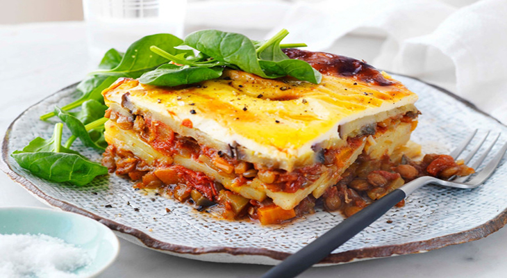

Top 5 Traditional Greek Food
by Jomari Ondap
Posted on April 03, 2018 at 10:05 PM
Greek cuisine is a Mediterranean food. Contemporary Greek cookery makes wide utilization of vegetables, olive oil, grains, angle, wine (white and red), and meat (including lamb, poultry, veal, beef, rabbit, and pork). Other imperative fixings incorporate olives, cheddar, lemon juice, herbs, bread, and yogurt. The most normally utilized grain is wheat; grain is additionally utilized. Regular sweet fixings incorporate nuts, nectar, natural products, and filo pastry. It is emphatically impacted by Ottoman cuisine and along these lines shares sustenances, for example, baklava, tzatziki, gyro, moussaka, dolmades, yuvarlakia and keftethes with the neighboring nations. Greece has for some time been a family holiday favorite, with its wonderful blue waters, child-friendly shorelines and wealth of flavor-pressed admission. Ensure you try all the nation brings to the table with our pick of tasty dishes. And here are the Top 5 Traditional Greek Food.
1. Tomatokeftedes (Santorini Tomato Fritters)
The First on the list of the Top 5 Traditional Greek Foods is Tomatokeftedes (Santorini Tomato Fritters). Tomaotokeftedes or tomato wastes are conventional mezes and primary course vegan sustenance thing in Santorini and Syros. Appropriate depleting of tomato is fundamental for setting up this scrumptious sustenance thing. These wastes have harsh edges with bits of mint, tomato and onion pieces.
2. Galaktoboureko
The second on the list of the Top 5 Traditional Greek Foods is Galaktoboureko. Galaktoboureko is an awesome Greek sweet firm flawlessness. Take a sizable chunk chomp of Galaktoboureko and let your mouth be loaded with its juices. This well established Greek treat is made of fresh phyllo sprinkled with liquefied margarine. Greeks utilize the most velvety custard and scented syrup to expand the essence of this nourishment by numerous folds.
3. Keftethes (Meatballs)
The third on the list of the Top 5 Traditional Greek Foods is Keftethes (Meatballs). Try this succulent and fresh Greek meatball out and convey a delectable bend to your plate. Irresistible and best eaten hot, while they’re still crispy on the outside but moist in the middle. Similar to kolokithokeftedes, but using tomatoes instead of courgettes as the core ingredient, tomato fritters are tastiest when made with cherry tomatoes from Santorini. Keftethes is, for the most part, a Greek hors-d’oeuvre dish presented with velvety sauce and pita bread. In any case, this thing can likewise be eaten as a full dinner with basmati rice and Greek feta serving of mixed greens.
4. Moussaka
The Fourth on the list of the Top 5 Traditional Greek Foods is Moussaka. One of Greece’s most famous dishes. It’s like a pasta-free lasagne, Moussaka is An unbelievable, customary dish that is rich and succulent. Moussaka is served in all tavernas in Greece. In the enormous family assembling this dish is set up by Greek homemakers. In Moussaka, tomato sauce is utilized to cook minced hamburger which is in this way layered with sweet eggplants and rich béchamel sauce. This overpowering cooking is filling so you don’t require excessively numerous side dishes.
5. Souvlaki
And the last on the list of the Top 5 Traditional Greek Foods is Souvlaki. Souvlaki means a skewer, so this is anything grilled on a skewer (lamb, chicken, pork, etc). These are great for the kids (and adults too). It is an exceptionally famous Greek sustenance accessible in roadside eateries. The dish is very much cooked with prepared meat and after that seasoned with tzatziki sauce. In Greek dialect, Souvlaki remains for ‘meat-on-a-stick. Most Greek individuals call any sort of pita wrapped meat a Souvlaki. Nonetheless, they some way or another recognize the name of the meat that is utilized. Concerning occurrence, Souvlaki with pork sticks or Souvlaki with chicken Gyros.
Categories
Recommended

Top 5 Most Iconic Foods in France
by Jomari Ondap

5 Dishes You Don’t Wanna Miss When Visiting Germany
by Erickson Javier

Italy’s Top 5 Exquisite, Loved and Delicious Dishes
by Erickson Javier